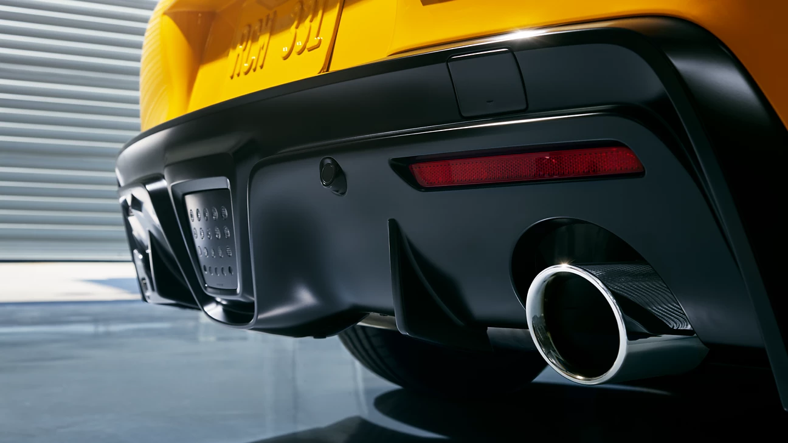
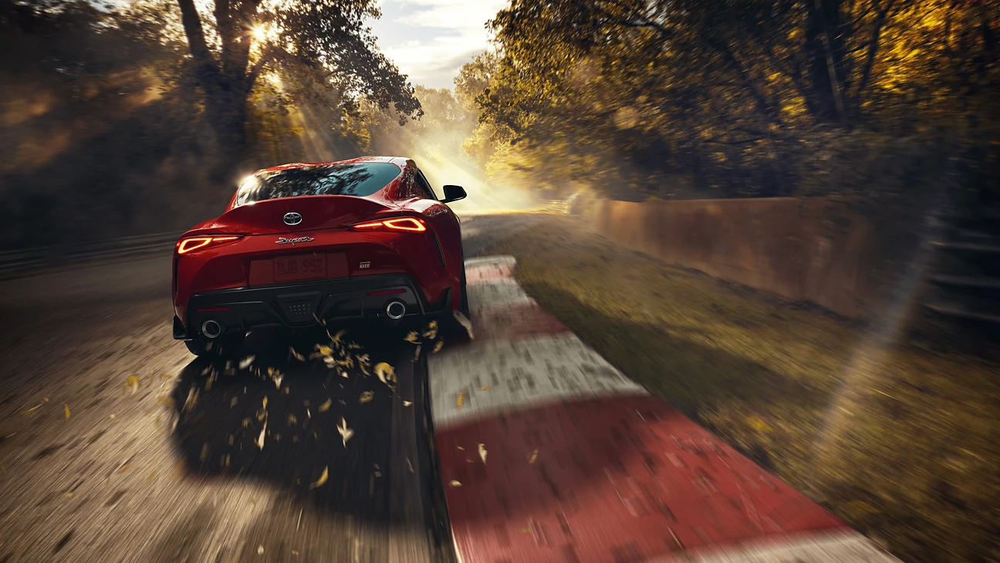

Una silueta sensual
El diseño se debe sentir tan atractivo como poderoso porque un auto deportivo debe cautivar con su presencia. No escatimamos con el diseño de GR Supra; todos los aspectos se definen por su contribución al rendimiento general de manejo. Sus curvas generosas y atrevidas despiertan todas las emociones y sentidos, todo en un paquete que ofrece un coeficiente de resistencia óptimo y carga aerodinámica excelente. Razones suficientes por la que el GR Supra es una obra de arte y no solo un auto deportivo.

Escape tipo cat-back
Los motores de 2.0 litros y 3.0 litros del GR Supra tienen escapes cat-back exclusivos que se ajustan para adaptarse a sus características de rendimiento específicas. Esto no solo ayuda a liberar el potencial de cada motor, sino que también les da un sonido del escape único y magnífico.

Suspensión variable adaptable
La Suspensión Variable Adaptable (AVS) disponible del GR Supra permite que esta máquina deportiva se transforme de un auto regular a uno más agresivo de manera casi instantánea y viceversa.